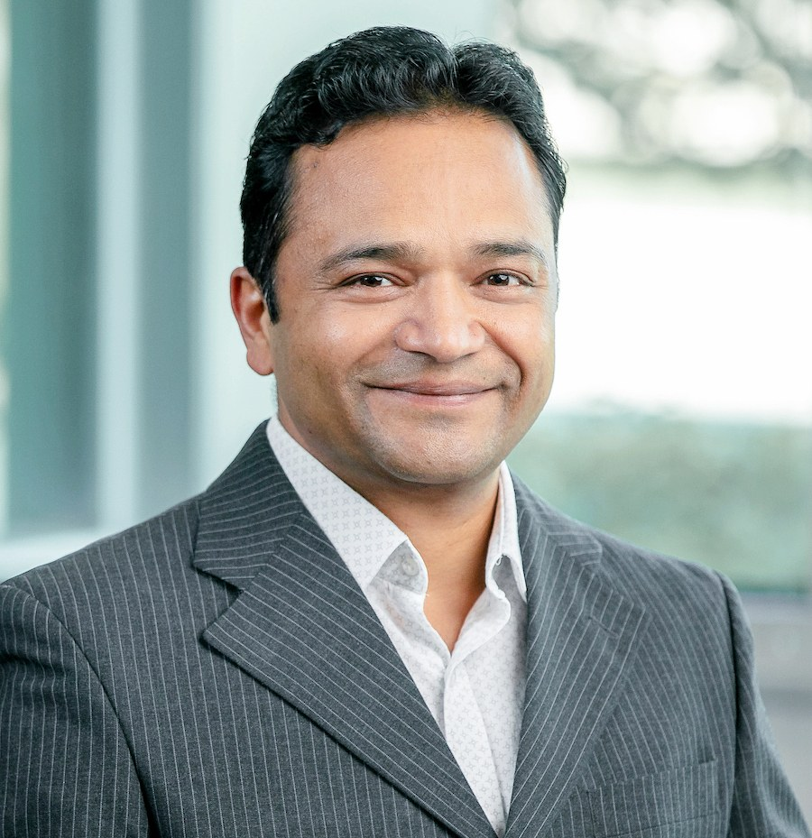

Enterprise Digital Transformation
Transformation strategy, operating models, governance, roadmaps and execution for complex global enterprises.
DIGITAL TRANSFORMATION · ENTERPRISE AI · ARCHITECTURE
I am Sachin Gupta, a Digital Transformation Architect focused on large-scale ERP modernization, enterprise architecture, AI/ML for enterprise operations and technology-enabled supply-chain resilience.

Connecting strategy, architecture, platforms, data and operations to modernize mission-critical enterprises while creating practical paths for responsible AI adoption.
ABOUT
I work at the intersection of enterprise strategy, architecture, business operations and technology delivery. My experience spans global ERP transformation, application modernization, enterprise architecture, supply-chain digitization and complex legacy-to-modern platform transitions.
My focus is solving transformation problems between technology and business continuity: fragmented platforms, regional variation, critical capabilities, data and integration dependencies, and the need to modernize while the enterprise keeps operating.
I am increasingly focused on AI/ML for enterprise operations identifying practical opportunities where AI can improve decisions, automate repeatable work, accelerate response times and strengthen operational intelligence while maintaining governance and human oversight.
EXPERTISE
Transformation strategy, operating models, governance, roadmaps and execution for complex global enterprises.
Business, application, data and technology architecture aligned to enterprise capabilities and strategic outcomes.
Practical AI/ML opportunities for decision intelligence, workflow automation, customer response, analytics and operational productivity.
Legacy-to-modern ERP transformation, coexistence architecture, integration, cutover strategy and business continuity.
Digital capabilities supporting inventory, order management, planning, fulfillment, visibility and resilience.
Modernizing fragmented technology estates while preserving critical regional, brand and operational capabilities.
AI / ML · OPPORTUNITIES
I am interested in opportunities where enterprise AI intersects with real operating problems not AI for its own sake.
Advisory conversations on identifying high-value AI use cases, operating models, governance, architecture and responsible adoption.
Discuss an opportunity ↗Interested in credible AI, enterprise technology, digital transformation and applied-innovation reviewing, judging and conference activities.
Invite me to contribute ↗Exploring research around AI-enabled enterprise operating models, decision intelligence, ERP transformation and supply-chain resilience.
Explore collaboration ↗Open to practitioner discussions, panels, podcasts, interviews and articles focused on practical enterprise AI adoption.
Invite me to speak ↗Interested in applied use cases across sales quoting, decision support, automation, data-driven operations and enterprise workflows.
Discuss a use case ↗Interested in university, professional and industry initiatives that connect emerging AI capabilities with enterprise practice.
Connect ↗SELECTED IMPACT
A key area of my work is designing scalable coexistence approaches where regional legacy environments transition toward a modern ERP ecosystem while business entities already operating on the modern platform continue to run.
Selected examples are intentionally high-level to respect employer confidentiality and intellectual property.
RESEARCH & PUBLICATIONS
A framework-oriented study of how enterprises can manage legacy and modern ERP environments during multi-region transformation while protecting business continuity, regional capabilities and supply-chain resilience.
Exploring how AI/ML can move from isolated use cases toward repeatable enterprise decision-intelligence capabilities.
Governance, architecture, operating-model design and transformation sequencing in complex enterprises.
Research should be useful to practitioners and scholars: grounded in real transformation challenges, structured as reusable frameworks and supported by evidence wherever confidentiality permits.
PROFESSIONAL CONTRIBUTIONS
Professional engagement across engineering, technology, digital transformation and related communities.
Building deeper participation in enterprise architecture research, knowledge sharing, publications and professional activities.
Seeking opportunities to contribute as a reviewer, judge, speaker, mentor or practitioner advisor in credible AI and enterprise-technology programs.
Contributing industry perspective to academic and emerging-technology discussions.
INSIGHTS
Effective AI adoption starts by identifying high-value decisions and workflows, then selecting the right technology and governance.
The platform changes, but sustainable transformation depends on capabilities, governance, data, integration and adoption.
Data quality, human oversight, security, accountability and measurable outcomes should be considered before AI becomes mission-critical.
CONNECT
I am open to professional conversations, AI opportunities, research collaboration, industry events, peer review, judging, mentoring, advisory work and thought-leadership opportunities aligned with my expertise.